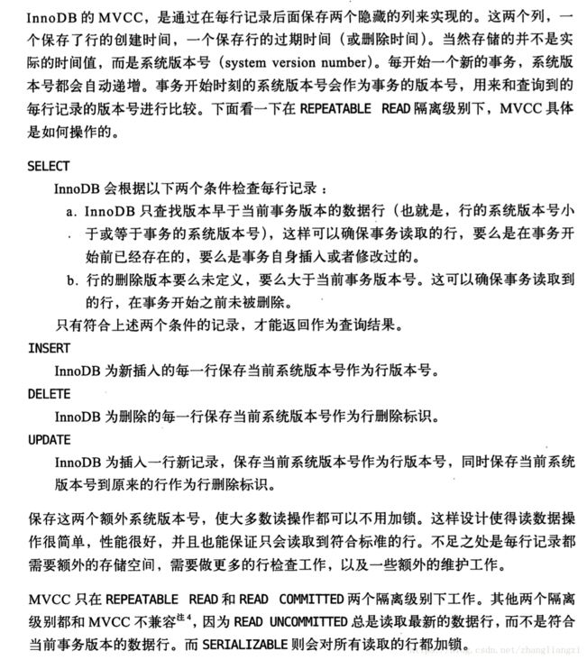

锁机制用于管理对共享资源的并发访问。
1、锁粒度
表锁是MySQL中最大粒度的锁定机制，会锁定整张表，可以很好的避免死锁，是 MySQL 中最大颗粒度的锁定机制。表锁由 MySQL Server 实现，一般在执行 DDL 语句时会对整个表进行加锁，比如说
ALTER TABLE等操作。在执行 DML 语句时，也可以通过LOCK TABLES显式指定对某个表进行加锁。页级锁锁定一页，主要应用于 BDB 存储引擎。
行级锁的锁定颗粒度在 MySQL 中是最小的，只针对操作的当前行进行加锁，所以行级锁发生锁定资源争用的概率也最小。只有通过索引进行检索的时候才会使用行级锁，否则会使用表级锁。InnoDB 默认使用行级锁。
2、行锁详解
InnoDB默认使用行锁，实现了两种标准的行锁——共享锁与排他锁；

1、除了显式加锁的情况，其他情况下的加锁与解锁都无需人工干预。
2、InnoDB所有的行锁算法都是基于索引实现的，锁定的也都是索引或索引区间
lock in share mode与for update的区别：
- lock in share mode 是共享锁；for update 是排他锁
- 没有覆盖索引时，两种锁都需要即锁辅助索引又锁主键索引；当有覆盖索引时，lock in share mode 只锁辅助索引，而 for update 即锁辅助索引又锁主键索引。
3、当前读与快照读
1、当前读：即加锁读，读取记录的最新版本，会加锁保证其他并发事务不能修改当前记录，直至获取锁的事务释放锁；使用当前读的操作主要包括：显式加锁的读操作与插入/更新/删除等写操作。
2、快照读：即不加锁读，读取记录的快照版本而非最新版本，通过MVCC实现；
InnoDB默认的RR事务隔离级别下，不显式加『lock in share mode』与『for update』的『select』操作都属于快照读，保证事务执行过程中只有第一次读之前提交的修改和自己的修改可见，其他的均不可见；
4、MVCC
MVCC『多版本并发控制』，与之对应的是『基于锁的并发控制』；
MVCC的最大好处：读不加任何锁，读写不冲突，对于读操作多于写操作的应用，极大的增加了系统的并发性能；

5、锁算法
InnoDB主要实现了三种行锁算法：

5.1、记录锁
记录锁(Record Locks)也称为行锁，顾名思义，表示对某一行记录加锁。
5.2、间隙锁
Gap锁，锁定的是索引记录之间的间隙，是防止幻读的关键；并发事务插入新数据前会先检测间隙中是否已被加锁，防止幻读的出现；间隙锁与间隙锁不互斥。
注意！间隙锁锁住的是一个区间，而不仅仅是这个区间中目前仅存在的数据行。
插入意向锁名字里虽然有意向锁这三个字，但是它并不是意向锁，它属于行级锁，是一种特殊的间隙锁，该锁只用于并发插入操作。是在插入一条记录行前，由INSERT操作产生的一种间隙锁。该锁用以表示插入意向，由于插入意向锁只是锁住一个点，当多个事务在同一区间插入位置不同的多条数据时，事务之间不需要互相等待。
间隙锁的意义只在于阻止区间被插入，因此是可以共存的。一个事务获取的间隙锁不会阻止另一个事务获取同一个间隙范围的间隙锁，共享和排他的间隙锁是没有区别的，他们相互不冲突，且功能相同。
综上：插入意向锁与插入意向锁互不冲突，间隙锁与间隙锁互不冲突，但是插入意向锁和间隙锁是冲突的，这从间隙锁可以防止幻读可以轻易理解。
如果两个事务分别向对方持有的间隙锁范围内插入一条记录，就会发生死锁。
5.3、临键锁
临键锁，是记录锁与间隙锁的组合。
6、表级锁
6.1、意向锁
意向锁（Intention Locks）是表级锁，指示事务稍后需要对表中的行使用哪种类型的锁（共享锁或独占锁）。
意向锁有两种类型：
- 意向共享锁（IS）：一个事务在获取（任何一行/或者全表）S锁之前，一定会先在所在的表上加IS锁。
- 意向排它锁（IX）：一个事务在获取（任何一行/或者全表）X锁之前，一定会先在所在的表上加IX锁。
意图锁定协议如下：
- 在事务可以获取表中行的共享锁之前，它必须首先获取
IS表上的锁或更强的锁。 - 在事务获得表中行的排他锁之前，它必须首先获得
IX表的锁。
6.2、自增锁
自增锁(auto-inc Locks)是一种特殊的表级锁，主要用于事务中插入自增字段，也就是我们最常用的自增主键id。在最简单的情况下，如果一个事务正在向表中插入值，则任何其他事务都必须等待自己插入到该表中，以便第一个事务插入的行接收连续的主键值。
7、加锁规则
- 原则1：加锁的基本单位是next-key lock。next-key lock是前开后闭区间。
- 原则2：查找过程中访问到的对象才会加锁。
- 原则3：索引上的等值查询，给唯一索引加锁的时候，next-key lock退化为行锁。
- 原则4：索引上的等值查询，向右遍历时且最后一个值不满足等值条件的时候，next-key lock退化为间隙锁。
- 原则5：唯一索引上的范围查询会访问到不满足条件的第一个值为止。
8、死锁解决方案
- 超时：当两个事务互相等待时，当一个等待时间超过设置的某一阈值时，其中一个事务进行回滚，另一个等待的事务就能继续进行。
- 等待图：通过事务的等待链表可以构造出一张图，在这个图中若存在回路，就代表存在死锁。这是一种较为主动的死锁检测机制，若存在则有死锁，InnoDB存储引擎会回滚undo量最小的事务。